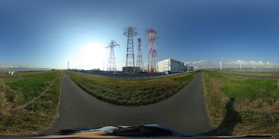
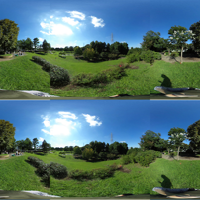
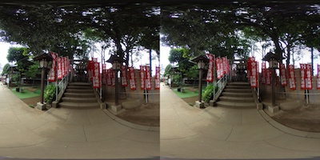
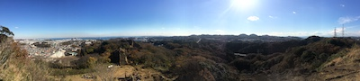

vr360 viewer samples
click photos to start viewer
360° Omnidirectional photo

(photo by THETA SC)
360° Omnidirectional Stereo photo

(photo by THETA SC)
180° half Omnidirectional Stereo photo

(photo by THETA SC)
wide panorama photo (mode=3)

(photo by iPhone)
repository
github